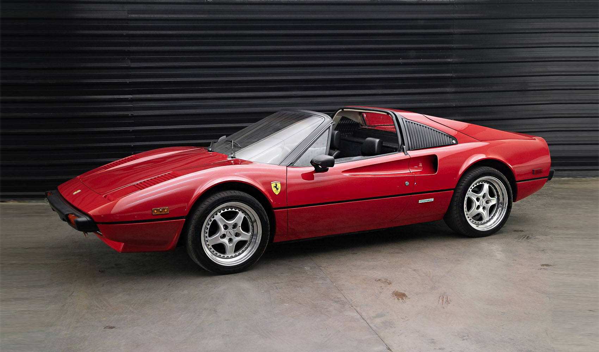

Motor e Desempenho:
Motor:V8 de 2.9 litros montado longitudinalmente, com carburadores Weber ou injeção mecânica (versão GTBi).
Potência: Entre 240 cv (carburado) e 255 cv (injeção), atingindo 0 a 100 km/h em 6,5 segundos e velocidade máxima de 260 km/h.
Transmissão:Câmbio manual de 5 velocidades com tração traseira.
Suspensão e Freios:Suspensão independente e freios a disco ventilados, garantindo precisão em curvas.
$100.000 - $70.000